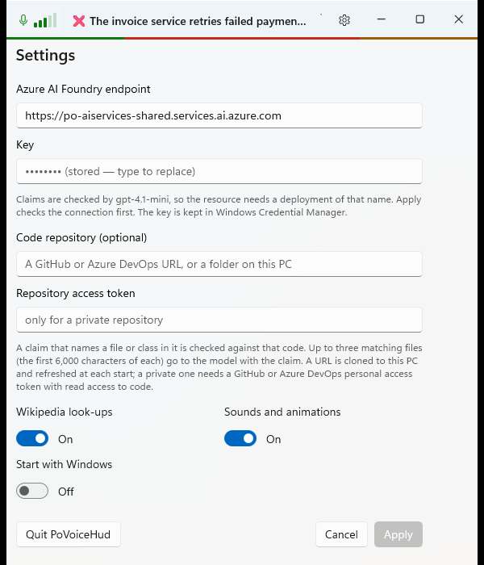
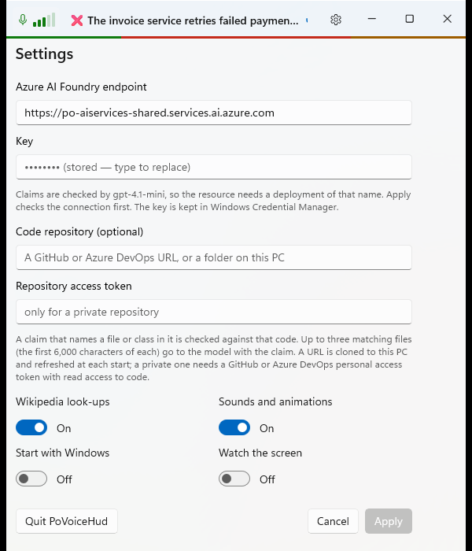

Watch the screen
Debug build with --demo --settings, captured with PrintWindow. "Before" is commit d345cf4; "after" is the working tree on 2026-10-29.
Before: three switches

After: a fourth, Watch the screen

1- Watch the screen, off by default, fills the empty slot. On: every 3 s the monitor you're working on is captured, and when it has changed the model describes it. Each fact check then gets that description, so a date said aloud can be Incorrect — On screen: the form says 09/28/2026. Its tooltip says where the pictures go, and that the HUD is hidden from captures and screen sharing while it is on.
Checked against the real resource
Shown this "after" screenshot, gpt-4.1-mini answered in 3.2 s: "Settings page for Azure AI Foundry endpoint configuration … Wikipedia look-ups and Sounds and animations toggled On. Start with Windows and Watch the screen toggled Off …". Given that description, "Wikipedia look-ups are switched off right now." came back ❌ Incorrect — On screen: The screen shows that Wikipedia look-ups are toggled On. A real capture of the desktop came out as a 1600×1000 JPEG of 150 KB.